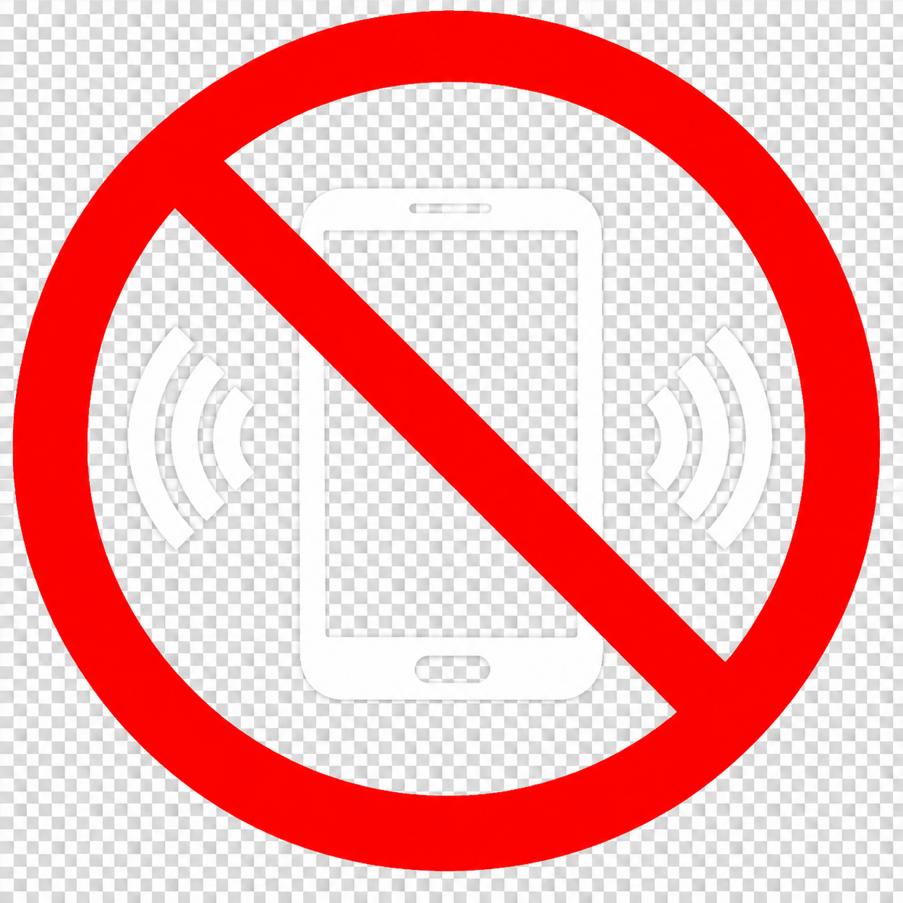

--
--
--
--
SUBUH
00:00
TERBIT
00:00
DZUHUR
00:00
ASHAR
00:00
MAGHRIB
00:00
ISYA'
00:00
INFAQ & SHADAQAH
270
HARI
menuju Ramadhan
MENUJU SHOLAT
00:00:00
WAKTU SHOLAT
SUBUH

DEMI KETENANGAN DAN KEKHUSYUKAN IBADAH SHOLAT KITA
MOHON UNTUK MENONAKTIFKAN HANDPHONE ATAU SILENT MODE
12
1
2
3
4
5
6
7
8
9
10
11
00:00:00
WITA
INFAQ & SHADAQAH